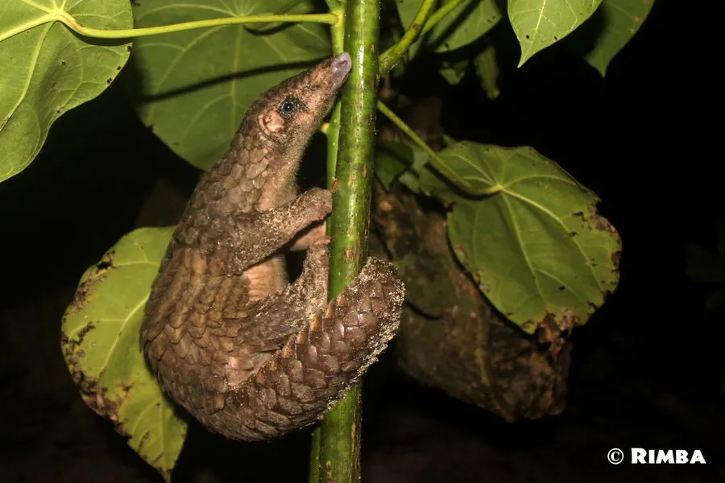

哺乳动物 · 动物界
马来穿山甲 Manis javanica

东南亚森林中的鳞甲目动物，全身覆角质鳞片、无齿而具长舌，专食蚁类，因鳞片与肉被大量走私而成为全球走私量最大的哺乳动物之一。
- 分类
- 门脊索动物门纲哺乳纲目鳞甲目科穿山甲科属穿山甲属
- 栖息环境
- 热带雨林、季雨林、次生林与农林交界的林地
- 地理分布
- 缅甸、泰国、越南、马来西亚、印度尼西亚苏门答腊与爪哇、婆罗洲
- 保护级别
- IUCN 极危（CR）；CITES 附录Ⅰ；中国国家一级保护动物
物种志
马来穿山甲体形修长，成年体长 40–65 厘米，尾长 35–58 厘米，体重 3–10 千克。全身除吻部、腹部和四肢内侧外覆盖角质鳞片，鳞片呈灰褐至深褐色，边缘锐利，由角蛋白构成，与指甲成分相同。头小吻尖，无齿，舌极长且能伸出体外，唾液黏稠，可黏附蚁类；四肢粗壮，前爪长而弯，善掘洞与攀爬，尾具缠绕性。
它们栖息于东南亚的热带雨林、季雨林和次生林，独居，多在夜间活动，白天躲在自挖的洞穴或树洞中。嗅觉灵敏，能循气味找到白蚁巢与蚁巢，用前爪掘开巢壁后伸舌舔食，一顿可吃掉数千只蚁。遇险时蜷成一团，用鳞片护住腹部，连虎豹也难以下口。每年繁殖一胎，孕期约 5–6 个月，每胎一仔。因鳞片被当作药材、肉被视为野味，它长期遭受大规模盗猎和走私，野外种群急剧下降。
形态与习性
- 体长约 40–65 cm，尾长 35–58 cm
- 体重约 3–10 kg
- 食性白蚁与蚂蚁为主，靠长舌黏食，无齿
- 鳞片由角蛋白构成，与指甲同源，全身约千枚
- 繁殖每年一胎，孕期约 5–6 个月，每胎一仔
- 活动节律夜行性，善攀爬，尾可缠绕树枝
- 种群现状过去十年查获走私个体数以万计，野外种群急剧下降
趣味知识
- 穿山甲的鳞片成分和人的指甲一样，都是角蛋白，并无药用奇效。
- 它没有牙齿，靠一条能伸出体外的长舌舔食白蚁。
- 遇险时它把身体蜷成球，鳞片边缘朝向外面，让捕食者无从下口。